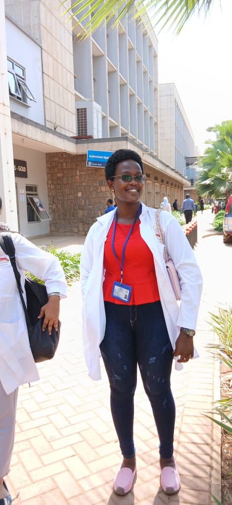
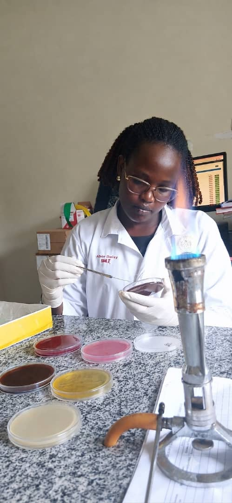
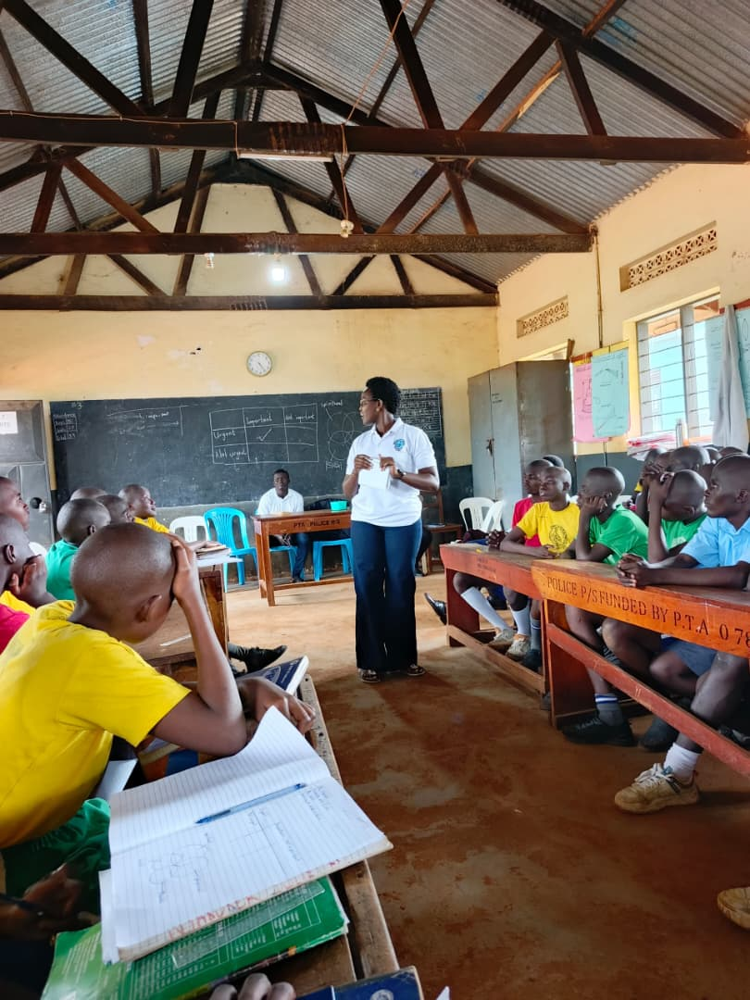
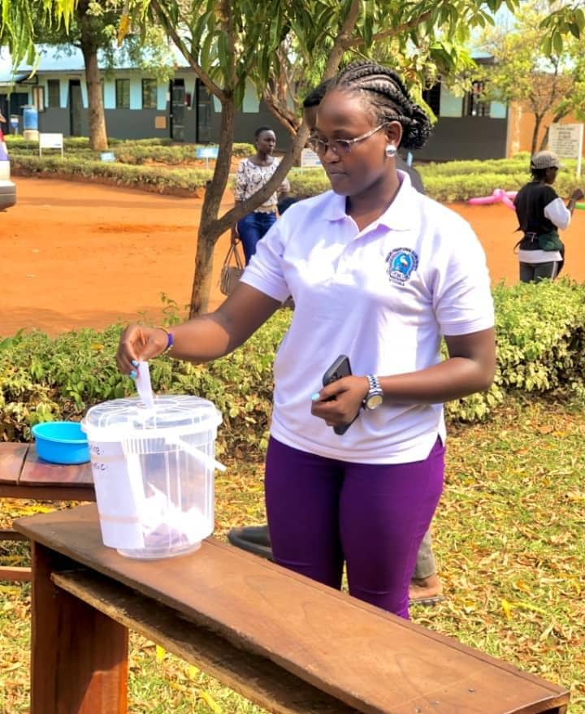

Medical Laboratory Technology Student
I am a Medical Laboratory Technology student at ISBAT University with a passion for youth leadership and empowering girls and young women.
About Me

I am pursuing Bachelors of Medical Laboratory Technology at ISBAT
University, Uganda. My major academic interests are microbiology,
immunology and public health and I'm looking forward to master in
public health.
Beyond the laboratory, I am passionate about youth leadership and
empowering girls and women. I believe that access to mentorship,
education and supportive communities enables young women to reach
their full potential
Laboratory Technology
Public Health
Empowering Girls
Education
Currently developing knowledge and practical skills in clinical laboratory sciences, diagnostics, biomedical research and healthcare practices.
Experience
Applied laboratory knowledge through practical sessions involving sample handling, testing procedures, safety protocols and scientific documentation.
Interested in healthcare research, disease prevention and using evidence-based approaches to improve health outcomes.
Experienced in working with peers on academic activities, presentations and healthcare-related discussions.
Skills
Gallery



Contact
Thank you for visiting my portfolio. If you'd like to discuss academic opportunities, internships, research collaborations, or professional networking, I'd be happy to hear from you.
aberdaisy37@gmail.com
Kampala, Uganda
ISBAT University